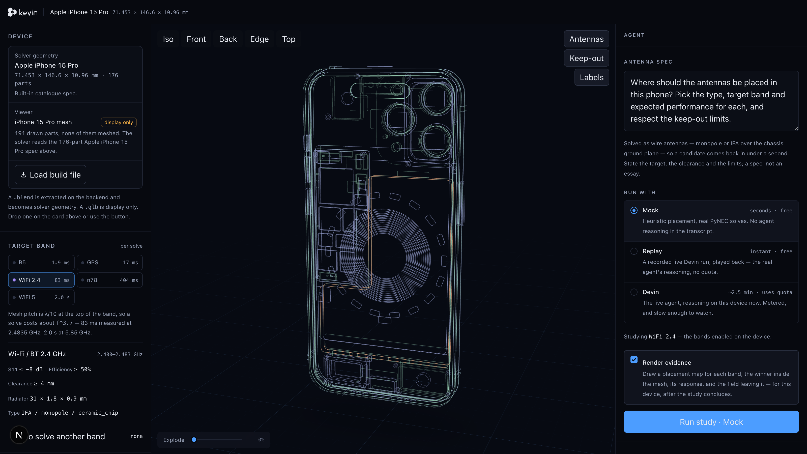

Hackathon · Munich 2026
kevin
the AI antenna engineer
Build file in · defensible placement out
Hackathon · Munich 2026
Why antennas
Every wireless thing
If it connects, it has an antenna.
5.4B
Bluetooth devices a year
15 mm
keep-out at 2.4 GHz, or it fails RF test
6–12
antennas in one phone
Shipment figures: industry estimates, external to this repo
Kevin
Where they come from
A full-time specialism
An RF engineer places it by hand, one guess at a time.
01Guess
Pick a corner
Judgment & experience
02Model
Mesh it in HFSS
Hours of setup
03Wait
Full-wave solve
≈ 1 hour — one candidate
04Tune
Build & measure
Days to weeks
Dozens of times, before sign-off
≈ 1 h
one full-wave run of a whole device
≈ 41 h
solver time to try a real set of positions
1 wk
one RF engineer on the calendar
Solve time and calendar math: deep_research_on_challenge.md
Kevin
The market
Big, and compounding
$28B of antennas ship a year. It doubles by 2035.
Segment
Now
Forecast
Antenna hardware
$28B
$54B ’35
5G antennas
$23B
$50B ’30
Design & simulation software
$1.5B
$2.9B ’34
What is pushing it
Market sizes and growth rates: published industry estimates, external to this repo
Kevin
The market, by analogy
You have seen this before
Software had this exact loop. Then AI ate it.
Software, 2021
- 47M developers
- $7.6B of tools, none of them with judgment
Software, now
- $3.5B of AI coding tools, from zero in three years
- 84% of developers use them
Antenna design is the same loop. Nobody has built the agent for it.
Developer population, tooling spend and AI-assistant adoption: published industry estimates, external to this repo
Kevin
The product
Two inputs, one loop
Drop in the build file and the spec. Kevin does the rest.
01Upload
.blend + spec
Seconds
02Read
Geometry & keep-outs
191 parts, no solver
03Propose
Design & placement
With its reasoning
04Simulate
Score each candidate
83 ms — one candidate
05Iterate
Until it converges
It decides when to stop
Fully autonomous — no human in the loop
38
candidates simulated
1 min 29 s
upload to finished design
0
engineer hours waiting on a solver
Devin owns the judgment · our orchestrator owns the loop · measured on this machine
Kevin
Demo

Live
Let’s run one.
- It reads the real device
- It argues out loud
- It stops on its own
iPhone 15 Pro · 176 parts · Wi-Fi / BT 2.4 GHz · nothing on screen is a mock-up
Kevin
The team

Aleksandr
Gorbunov
Gorbunov
Agent & systems integration

Damià
Vicens Ramis
Vicens Ramis
3D modelling & simulation

Amr
Moussa
Moussa
Visualisation & UI

Rauf
Boudenne
Boudenne
RF research & simulation
Built at the hackathon · Munich 2026
Kevin
Thank you
questions.
Build file in. Defensible placement out.
Kevin · AI antenna engineer
Hackathon · Munich 2026